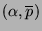
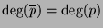
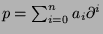
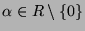

Usage
twist(p, q)
Signature
twist: (L, Product R) (R, L)
| Parameter | Type | Description |
|---|---|---|
| p | L | A differential operator |
| q | Product R | A product of coefficients |
Returns
Returns  such that  and
where , and  is chosen so that the result has coefficients in. We have
for anyin any differential extension of